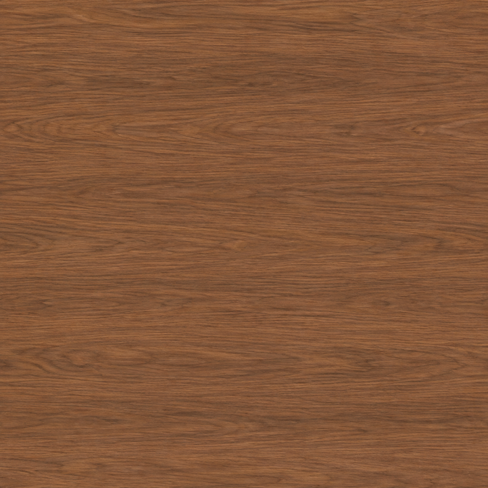
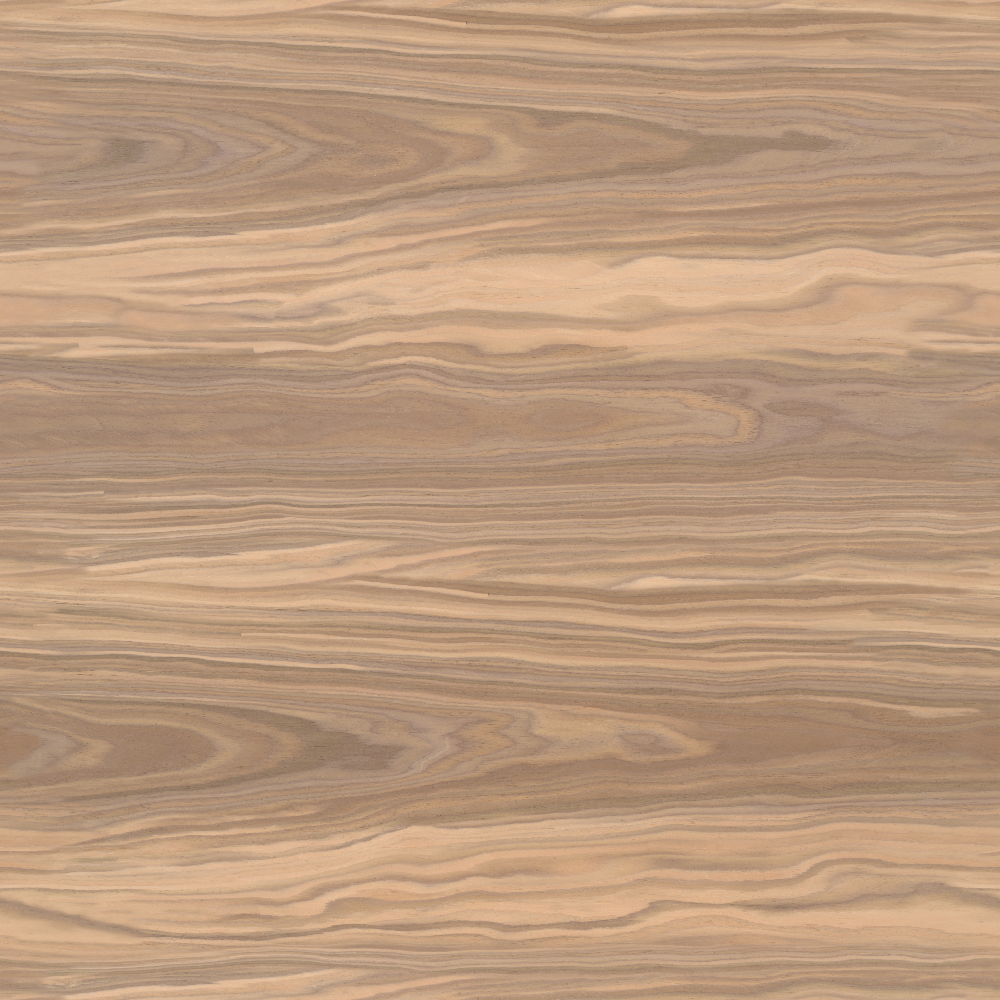
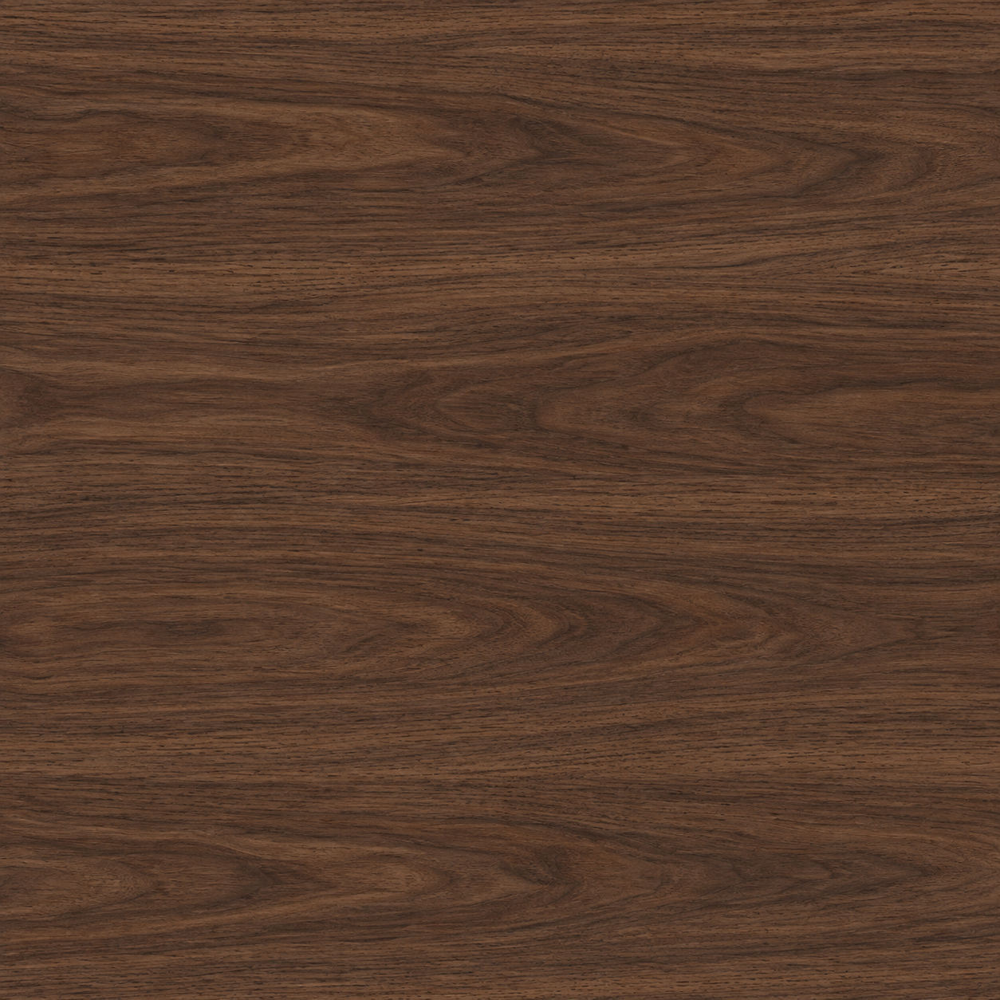
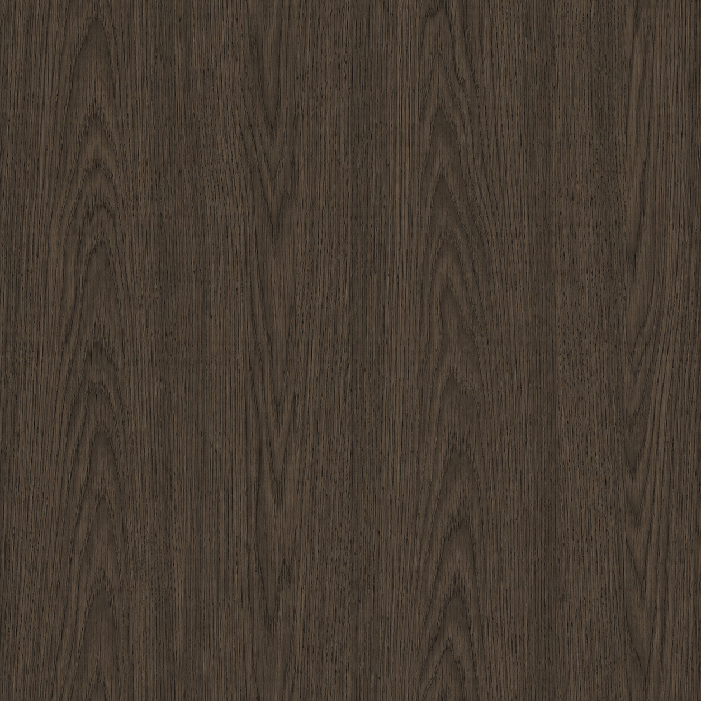

Tech Bay
Ниша под системный блок внутри корпуса: раздельные приточный и вытяжной тракты, кабельные трассы в теле стола, сервисный доступ без демонтажа рабочей поверхности. Компьютер — ваш, ниша к нему подготовлена.

Все инструменты вашего рабочего процесса постоянно подключены и находятся на расстоянии одного поворота кресла.
от 589 000 ₽ депозит 50% · старт продаж — II полугодие 2027
Наружный контур — скруглённый квадрат 2900 мм. Внутри — отверстие Ø1200 мм, в котором находитесь вы и кресло. Всё остальное — пояс вокруг этого отверстия.

Обычный стол заканчивается там, где заканчивается столешница. CENTRUM окружает вас рабочей поверхностью — техника, документы и нужные вещи остаются рядом, а не расползаются по комнате.

Не надо вставать или кататься на кресле от одного края стола к другому. Просто повернулись — и нужная зона уже перед вами.
Два уровня помогают разгрузить основную поверхность. Мониторы, техника, книги и декор можно убрать наверх, оставив перед собой большое чистое пространство для работы.
Внутренний край плавно скруглен там, где лежат предплечья. Никакой острой кромки, которая через пару часов начинает бесить.
Проход достаточно широкий, чтобы спокойно заехать внутрь на кресле без боковых маневров и попыток протиснуться.
Подъёмная секция 793 × 1003 × 60 мм встаёт в проём с зазорами 3 и 4 мм и превращает кольцо в замкнутую петлю: рабочая поверхность идёт на все 360°. Открывается до упора на 100° и стоит у левой кромки входа.
Снаружи CENTRUM — деревянная поверхность и матово-чёрные фасады без ручек. Провода, компьютер, вентиляция, динамики и блоки питания живут в теле стола.
Ниша под системный блок внутри корпуса: раздельные приточный и вытяжной тракты, кабельные трассы в теле стола, сервисный доступ без демонтажа рабочей поверхности. Компьютер — ваш, ниша к нему подготовлена.
Мягкий свет прямо на рабочую поверхность, без лампы на столе и без слепящего источника перед глазами. Выбирайте теплый, холодный или RGB свет под настроение. А подсветка ящиков будет включаться сама при открытии


Девять ящиков сеткой 3 × 3 на участке 1800 мм наружного фасада. Ровные фасады, тонкие зазоры, утопленные пальцевые вырезы — никаких выступающих ручек. В базе — три ящика, остальные добавляются в конфигураторе.

Модуль в углу фасада: стеклянная дверь, глубина 460 мм, высота 639 мм. Открывается снаружи кольца и не отнимает место у ног.
Секция закрывает проход и превращает рабочее место в замкнутое кольцо. Поднимите её, когда нужно войти внутрь, и опустите после работы — поверхность снова становится цельной.


Мусорный модуль, Dock и Qi-площадки, вентиляционные каналы с обслуживанием, кабель-менеджмент по всем трассам, матово-чёрный корпус. Всё это входит в базу, а не докупается.


Пять динамиков спрятаны прямо в стенке. Никаких колонок на столе, проводов и лишних стоек — рабочая поверхность остается чистой, а звук окружает вас со всех сторон.
Фронтальные, центральный и тыловые каналы уже находятся вокруг рабочего места. Для фильмов, игр, музыки или монтажа — объемный звук без отдельной акустической системы, занимающей половину комнаты.
Форма CENTRUM рассчитана так, чтобы отражения не превращали голос, музыку и клавиатуру в гулкую кашу. Внутренняя акустика делает звук чище и комфортнее даже при долгой работе.
34 съемных поглощающих элемента гасят лишние отражения вокруг рабочего места. Особенно заметно это при звонках, записи голоса, работе с музыкой и просто в комнате с плохой акустикой.
Акустическая обработка входит в базовую комплектацию. Система 5.1 — опция. Перед серийным производством акустика будет проверена и настроена на реальном прототипе.
Дерево задаёт характер, корпус всегда остаётся матово-чёрным — чтобы стол читался как объём, а не как мебельная стенка.

ОрехТёплый натуральный оттенокв базе
Тёмный орехГлубокий тёмный тон+15 000 ₽
Натуральный дубСветлая текстура+12 000 ₽
Чёрный дубТёмная графичная текстура+18 000 ₽
Кольцо, два уровня и Tech Bay не зависят от того, чем вы заняты. Меняются наполнение, электрика, свет и звук. Пресет — это стартовая точка, дальше всё правится в конфигураторе.
MAX-электрика, RGB-линия, скрытая акустика 5.1, Tech Bay под мощный ПК с раздельными трактами охлаждения.
Нейтральные 4000 K, максимум пустой поверхности, кронштейн под ультраширокий монитор, тихий контур охлаждения.
Акустическая обработка стенки, нижний ярус под клавиатуру и контроллеры, отдельные кабельные трассы под сигнальные линии.
Принтер на верхнем ярусе, вытяжной тракт корпуса, ящики под филамент и инструмент, дополнительные розетки.
Тёплый свет для просмотра, 5.1 для сведения, хранение под диски и карты, питание под рендер-станцию.
Соберите конфигурацию под себя: отделка, количество ящиков, электрика, свет, звук и кронштейн — с ценой в реальном времени.
Открыть конфигураторОтделка, ящики, электрика, свет, звук и кронштейн — в 3D и с ценой, которая пересчитывается на каждом шаге. Конфигурацию можно сохранить ссылкой и отправить заявку прямо отсюда.
Не открывается в этой рамке? Откройте конфигуратор на отдельной странице.
Первая партия — 10 столов. Старт продаж — II полугодие 2027 года. Предзаказ фиксирует за вами место в партии и цену конфигурации на момент заявки.
Старт продаж запланирован на вторую половину 2027 года. Партия ограничена, места распределяются по очереди предзаказов.
Конструкция 2900 × 2900 мм, Bridge, холодильник, Tech Bay, мусорный модуль, базовая система хранения, кабель-менеджмент, вентиляция, Dock, Qi, LED-подсветка, акустическая обработка и матово-чёрный корпус.
Нет. Tech Bay — подготовленная ниша под ваш компьютер: вентиляция, трассы и сервисный доступ уже сделаны. Монитор покупается отдельно, скрытый кронштейн с кабельным маршрутом — опция конфигуратора.
Пятно изделия — 2900 × 2900 мм. К нему нужен подход со стороны входной секции, чтобы кресло въезжало в проход 800 мм.
Компоновка пяти каналов, объёмы кассет, углы и поглощающие клинья проработаны и прорисованы на листах 24–28. Это проектный эскиз: перед серией собирается прототип одного канала, снимается импульс и АЧХ, и только после этого паз режется на всю дугу.
50% от итоговой суммы собранной конфигурации. Условия окончательного расчёта обсуждаются лично до старта производства.